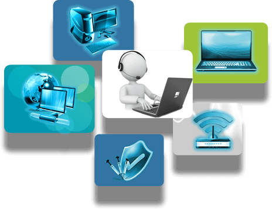

A relevância da atuação da equipe de suporte de informática
O suporte de informática é um dos serviços mais requisitados pelas empresas no cenário mercadológico
atual. Isso ocorre porque essa é uma importante atividade para assegurar que toda a tecnologia do
ramo da informática que a empresa dispõe, para exercer seu trabalho, irá funcionar de maneira
adequada e benéfica à atuação dos profissionais.
Por essa razão, assim como em outros países, o serviço de suporte de informática é frequentemente
buscado por empresas de setores diversos que, por sua vez, se responsabilizam por realizar diversas
atividades, como: manutenção preventiva e corretiva de equipamentos; processos de backup;
configuração e conexão de dispositivos; entre outras.

Ao prestar o serviço de suporte de informática para os clientes, é fundamental que as empresas se
comprometam em oferecer, antes de qualquer coisa, a expertise dos profissionais que nela atuam, pois
apenas um profissional qualificado de Tecnologia da Informação (TI) ou área similar está apto a
manusear estruturas e equipamentos de informática para fins de instalação, manutenção ou correção. É
importante que os clientes também estejam atentos sobre os riscos de contar com pessoas que não
estejam devidamente qualificadas para este tipo de trabalho, já que uma intervenção errônea na
estrutura e nos equipamentos de informática da empresa poderá gerar problemas não apenas para estes
itens, mas também para a produtividade da empresa ou para a viabilização de seu funcionamento.
Motivos para escolher um suporte de informática de alta credibilidade
Um dos pilares da TI Informática é a inclusão de profissionais altamente habilitados em sua
equipe, o que proporciona aos clientes um atendimento ágil e qualificado, com um suporte de
informática que oferece processos de instalação, manutenção e backup plenamente eficientes.
Empresas que adotam um suporte de informática confiável para suas necessidades no ramo de TI podem
contar com vantagens diversas, a exemplo de:
Garantia de problemas solucionados de forma ágil e rápida, proporcionando a retomada de
produtividade da empresa;
Processos de manutenção eficientes, gerando prevenções e correções precisas;
Prevenção de problemas como vulnerabilidade da rede, problemas de conexão, obsolescência de
equipamentos, entre outros;
Garantia de aproveitamento máximo dos recursos de informática disponíveis.
Sobre a Empresa
Localizada na Zona Oeste de São Paulo, a TI Informática presta serviços no ramo da
Tecnologia da Informação por meio de profissionais especializados, tais como a locação e manutenção
de computadores, a instalação de PABX, a instalação de câmera de segurança, entre outros. A empresa
presta atendimento em 6 horas comerciais e atendimento remoto.
Para saber mais sobre Alugar computadores ligue para (11) 3653-2376 ou clique e aqui e preencha o
formulário de contato que um de nossos consultores entrará em contato.